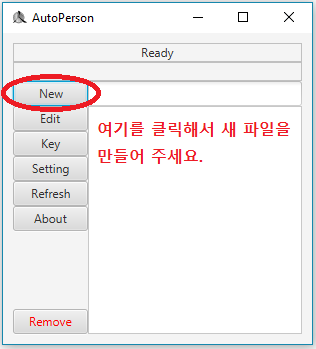
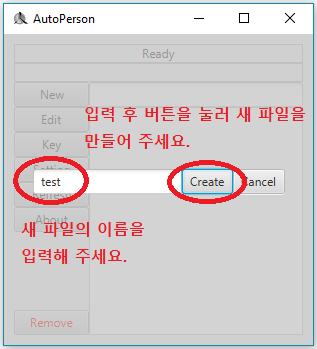
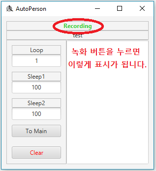
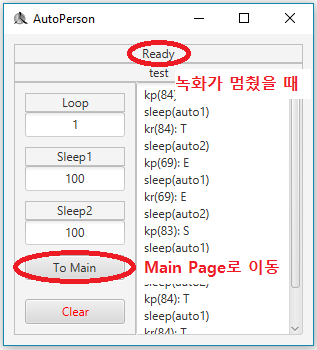

이번엔 키보드와 마우스 행동을 녹화해 보겠습니다.
녹화를 하기 전에 New 버튼을 눌러 새 파일을 만들어야 합니다.

파일 이름을 정한 후 Create 버튼을 눌러 주세요.

파일이 성공적으로 만들어졌다면 edit page로 이동하게 될 겁니다.
Edit page에 계신 상태에서 저번 시간에 설정했던 녹화 버튼을 눌러주세요.

초록색 글씨로 "recording"이라고 나온다면 녹화 중이라는 뜻입니다.
녹화 버튼을 다시 한번 누르면 녹화가 종료됩니다.
녹화가 종료되면 "Ready"라는 문구로 돌아옵니다.
녹화를 끝내셨으면 To Main 버튼을 눌러 main page로 이동합시다.
